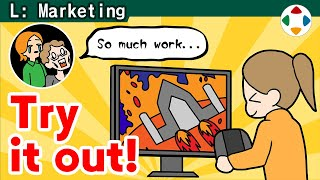
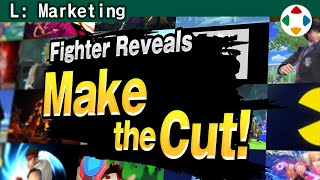
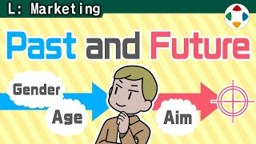

首页 / L 市场营销
 #13:27
#13:27宣传是乘法
Marketing is Multiplicative游戏好玩很重要，但「被知道」同样重要——不被知道等于不存在。开发和宣传是同一根轴上的两个轮子，成果彼此成比例。樱井积极参与宣传：参战影片、官方推特与网站的检查与提案。
 #23:20
#23:20准确传达游戏的样子
Paint an Accurate Picture of Your Game玩之前，玩家只能通过名字、包装、截图、宣传影片了解游戏。再想制造反转，也不能让商品印象与实际内容脱节——买香蕉吃出苹果味可不行。起名时考虑日语 4 字简称；《星之卡比 超级豪华版》日版桐木盒包装是看似脱节、实则抓住本质的例外。

#33:44体验版
Game Demos体验版很有效，但做起来非常费力，可能和做一款小游戏差不多：要防剧透泄露、仔细剔除数据；两个版本分别管理、更新、调整、调试；剔除要素易出 bug，平衡没调好可能被看扁。游戏巨大化让体验版更难，做不做取决于厂商方针。
- #44:55
官方网站
Official Websites如今人们更多看 SNS 的短信息，但大作的官网短期内不会消失——系统、正确地发布完整信息很重要。《大乱斗 SP》官网层级很深、信息量巨大；而初代《大乱斗》官网「大乱斗拳」源于发售前不被理解的挫折。

#56:38参战影片
Fighter Reveal Videos参战影片起源于《大乱斗X》亚空使者的剧情影片——却在发售前被上传到网上。于是改为与游戏进度无关、谁看都有趣的影片，共做了 37 部。CG 部分：樱井写剧情大纲 → 分镜 → 动态分镜 → 预演 → 正式制作 → 音响；游戏部分由团队用调试与回放功能拍摄，反复监修。
 #62:30
#62:30快让人看到实际游戏！
Show the Actual Game!能看到游戏实际运行的宣传影片必不可少，但很多影片开场动画、角色介绍放个没完，迟迟不进游戏画面——请别这样，尽早放入游戏画面。知名系列可以用预告式手法，新作和独立游戏应马上展示游戏；演示就是速度。
 #72:39
#72:39在别人面前玩游戏
Playing Games in Front of Other People樱井可能是在人前玩游戏最多的游戏总监：「樱井政博的○○」、DLC 发表、日本游戏大赏。演示时他注意：必杀技与终极必杀全部用出、不赢得太悬殊、多展示普通招式——尽量多「拿到素材」。当面演示也许是最有效的演示，也能整理思路。

#84:23目标客群与市场调研
Targeting and Market Research企划时常被要求「明确目标客群」，营销也会细致地把数据化。樱井不反对，但建议构思新游戏时别太当真：目标客群界线模糊（初代卡比面向「新手」而非「儿童」），市场调研只是别人走过的路，一直追随会变得平庸、跳进红海。开新路的人总是孤独的，却在开拓地平线。
- #95:58
大乱斗拳!!
Smash Bros. DOJO!!初代《大乱斗》的深度不被理解、被「看不起」。樱井把给杂志社的《秘传之书》改为公开网站「大乱斗拳!!」，独自用 HTML 工具熬夜完成；之后口碑扩散成大热门。DX 时做「速报大乱斗拳」，X 时周一到周五每日更新、6 种语言。总监亲自发信息很忙，但开发与宣传是两个轮子。